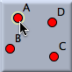
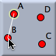
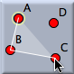
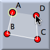
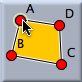

Polygon

If you made a mistake in selecting a point, you just click the point again to delete it from the boundary of the polygon. However, only the last point in the sequence can be deselected in this way.
Graphical hints guide you through the definition phase. They always resemble the part of the polygon that has been constructed so far.
 |  |  |  |  | |||||
| 1st click | 2nd click | 3rd click | 4th click | 5th click |
For construction regular polygons there are also a variety of other modes described in the section Polygons.
Synopsis
Select a sequence of points to define a polygon. To finish the definition select the first point again.
Caution
This mode is supported only in the Euclidean, spherical, and textual views. The hyperbolic view ignores polygonal objects. The orientation of the polygon is important when one measures its area.
Page last modified on Thursday 28 of July, 2011 [08:42:13 UTC].
The original document is available at
http://doc.cinderella.de/tiki-index.php?page=Polygon